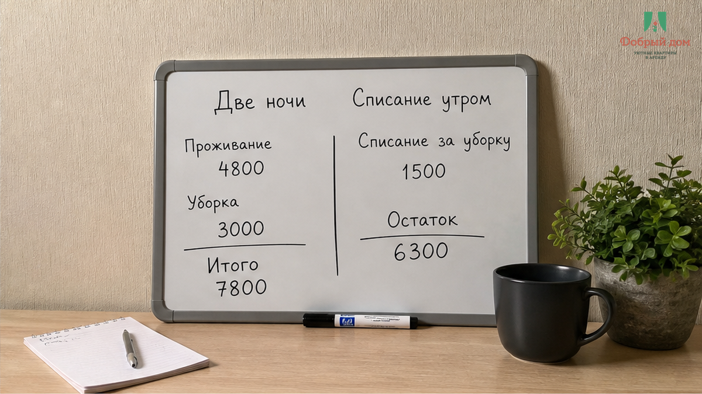
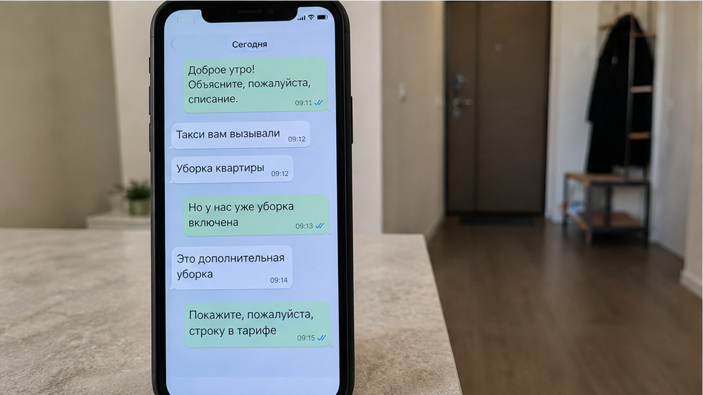
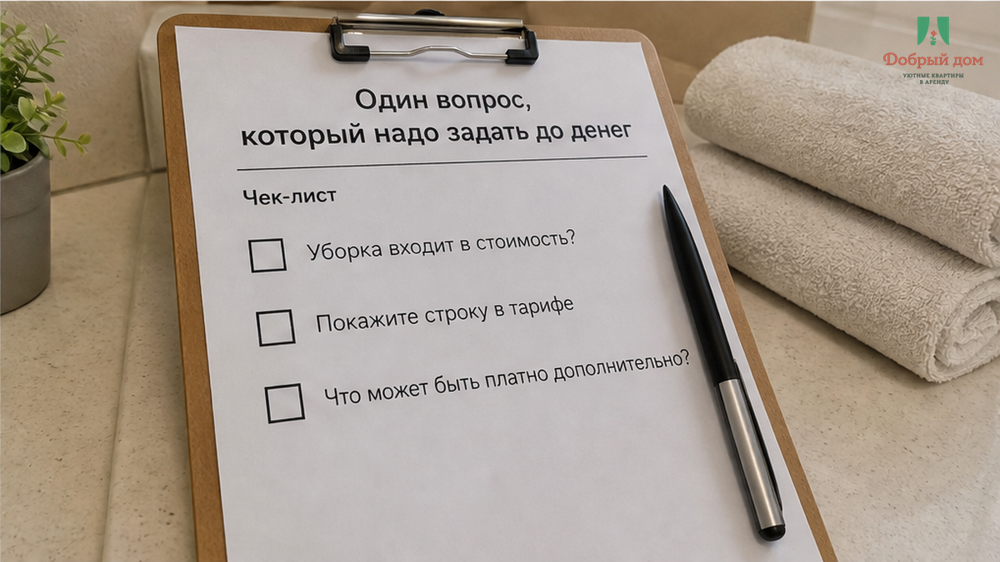
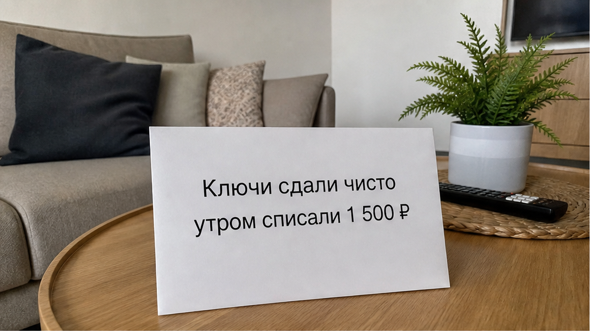
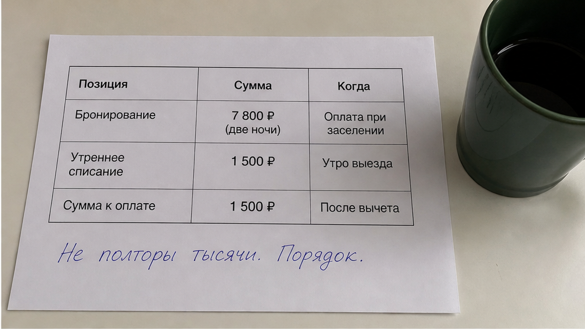
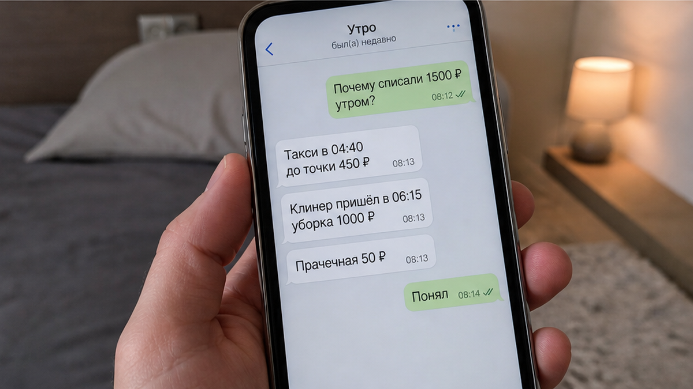
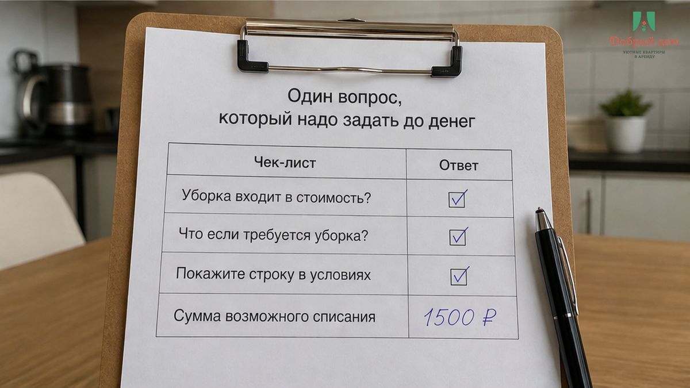

«Списали 1 500 ₽ за финальную уборку, по правилам» — утром, когда вы уже в такси. Две ночи стоили 7 800 ₽, ключи сдали чисто: посуда вымыта, мусор вынесен, полотенца на стуле. В переписке до оплаты этой строки не было — ни цифры, ни слова «дополнительно». Не просьба и не вопрос: деньги уже списали с карты под залог.
Вы открываете переписку и ищете, где на это соглашались. Цена за две ночи — есть. Время заезда — есть. Просьба не курить — есть. Голосовое про домофон — есть. Строки «финальная уборка 1 500 ₽ дополнительно» нет. И вот здесь ломается простая иллюзия: вы думали, что сдали квартиру чисто — значит, история закончилась. А вам показывают другой список. В одном списке чисто. В другом — оплачено. И второй список появился уже после ключей.
Я хост посуточной в Тюмени. Это «Добрый дом». Telegram · MAX.

1 500 ₽ — ужин на двоих, не катастрофа. Но проблема не в сумме. Проблема в порядке, в котором она возникла. Пока вы ещё в квартире, вы можете спросить: уборка входит в цену или отдельно? Можете увидеть цифру, согласиться или отказаться. Пока перевод не сделан, вы не проситель, а сторона разговора. После выезда всё меняется. Ключи сданы. Квартира закрыта. Деньги уже у другой стороны. Вам не предлагают условие — вас ставят перед фактом.
«У нас так принято», — обычно звучит ответ. Или ещё лучше: «Это же финальная уборка, у всех так». Будто фраза «у всех» сама по себе превращает отсутствующую строку в договорённость. Нет. Если уборка была названа заранее — гость видит полную цену и решает сам. Это нормальный разговор. Если цифру достают утром после выезда, это не правило. Это счёт за то, что вы доверились объявлению.

Гость пишет спокойно: «Здравствуйте. Я вчера выехал, квартиру оставил чистой, посуду помыл, мусор вынес. За что списали 1 500 ₽?»
И получает уверенный ответ: «Финальная уборка обязательная. Это в правилах».
Тогда гость просит показать правила. Не пересказать. Не объяснить голосом. Показать, где до оплаты была написана эта сумма. И тут разговор начинает расползаться. Оказывается, есть некая общая практика. Есть устное объяснение. Есть описание, где мельком сказано «уборка после выезда», но нет ни цифры, ни слова «дополнительно», ни ответа на главный вопрос: она уже включена в стоимость ночей или придёт сверху?
Потом часто начинается вторая часть. «Нашли волосы в ванной». «Пришлось перестилать». «Уборщица сказала, что было грязно». Это удобно говорить после того, как гость уехал. У гостя обычно нет ни фотографии ванной, ни видео кухни, ни сообщения, отправленного из квартиры перед сдачей ключей. Слово против слова. Только деньги уже на одной стороне.
Мы на такое смотрим просто: Нет. Так не заселяем. Если уборка не была отдельной строкой до оплаты, она не должна появляться после выезда. Не бывает «сначала поживите, потом узнаете полную цену». Не бывает списания за то, что якобы было в правилах, но этих правил гость не видел.
Уборка может быть включена в стоимость — это один вариант. Может быть отдельной фиксированной суммой — это второй вариант. Оба честные, если написаны заранее. Нечестен только третий: когда вам сначала называют 7 800 ₽ за две ночи, а утром оказывается, что 7 800 ₽ были не всей ценой.

Не нужно устраивать допрос. Не нужно писать длинное сообщение. Есть один вопрос, который сразу ставит всё на место:
«Уборка входит в цену или отдельно? Покажите строку до оплаты.»
Именно «покажите». Не «скажите». Сказать можно что угодно, особенно когда деньги уже переведены. А строка в чате, в описании или на скриншоте остаётся. Если уборка отдельная, пусть будет написано: «Уборка 1 500 ₽ дополнительно к стоимости проживания». Если входит — пусть будет написано: «Уборка включена». Всё. Никакой тайны, никакого напряжения.
Нормальный хост на такой вопрос не обидится. Ему не надо сочинять ответ: цена у него собрана заранее, и он готов её показать. А раздражение в духе «вы что, не доверяете?» — это уже не про уборку. Это про желание, чтобы вы не задавали неудобных вопросов до перевода.
Та же схема работает и с другими «мелочами», которые потом почему-то становятся дорогими. С залогом — когда на выезде вдруг говорят, что его не вернут. С обещанием «всё включено» — когда в такси выясняется, что включено оказалось не всё. С красивыми словами в объявлении — когда «всё для гостей» по факту превращается в один мокрый коврик в ванной. Обёртки разные. Приём один: важное условие показывают тогда, когда спорить уже неудобно.

Вы не обязаны превращать отдых в следственную работу. Но две минуты с телефоном перед выездом могут сберечь неделю переписки.
Пройдите квартирой одним коротким видео. Кухня, раковина, плита, ванная, комната, кровать, мусорное ведро. Не надо снимать кино на двадцать минут. Достаточно нормального прохода, где видно состояние квартиры. Отдельно снимите ключи в кейбоксе или там, где их оставляете. И отправьте видео в чат ещё из квартиры: «Выезжаю, оставляю так».
С залогом порядок такой же. Если берут 5 000 ₽ или ставят блокировку на карте, до оплаты должно быть ясно: за что могут удержать, в какой срок вернут, что именно считают основанием. Иначе залог становится чужим кошельком, из которого можно достать деньги за уборку, поздний выезд или «лишнее полотенце». По отдельности каждый повод звучит мелко. Вместе — это уже половина ночи.

А вы узнали цену уборки до перевода или утром, когда деньги уже списали? Напишите нам в Telegram или MAX. Разберём вашу ситуацию лично, без комментариев под статьёй и без фраз «ну у всех так».

Гость из этой истории сделал всё правильно по-человечески. Не оставил гору посуды. Не бросил мусор. Не хлопнул дверью и не исчез. Сдал квартиру чисто. Но человеческое «я же всё убрал» не помогает там, где деньги списывают по невидимому условию.
История решалась не утром в такси и не в споре после выезда. Она решалась до брони, в одном сообщении. Там вопрос стоил тридцать секунд. После ключей он стоил 1 500 ₽, времени, злости и ощущения, что тебя аккуратно поставили перед фактом.
Сначала проверка. Потом перевод. Не наоборот.

Цена — это не цифра, которую вы увидели первой в объявлении. Цена — это всё, что вам назвали до того, как вы отдали деньги и взяли ключи. Всё, что появляется после выезда, уже не цена. Это счёт за доверие.
У нас уборка входит в стоимость. Сумма, которую вы видите в чате перед бронью, — это сумма, которую вы платите. Без утренних списаний на 1 500 ₽. Без «это было в правилах», которые никто не показывал.
Написать нам: Telegram · MAX · бронь · тел. +7 993 574-83-22 · менеджер @Dobriy_dom_Tyumen.